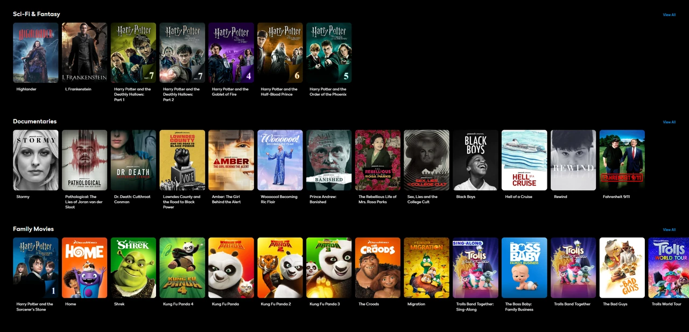
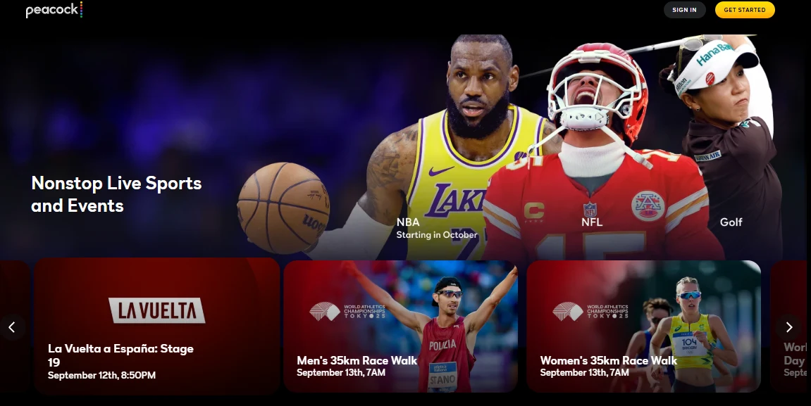
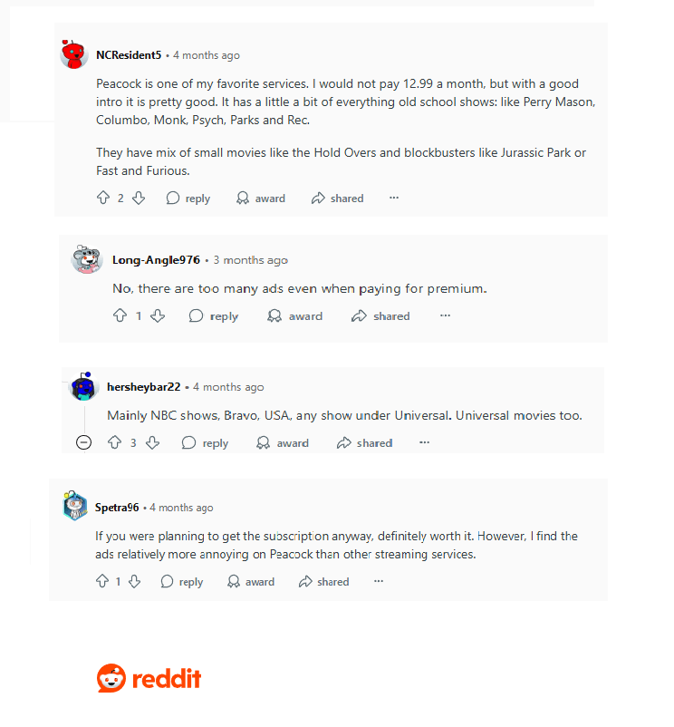
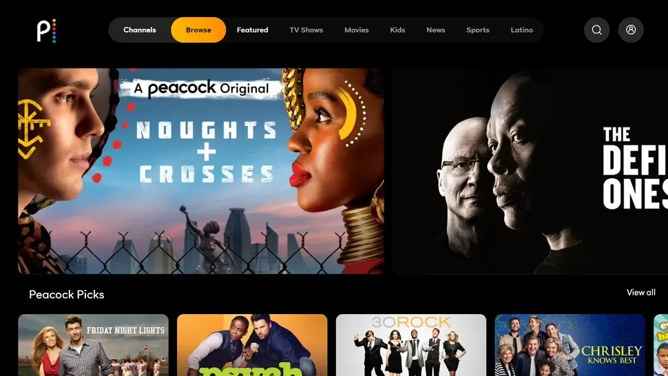
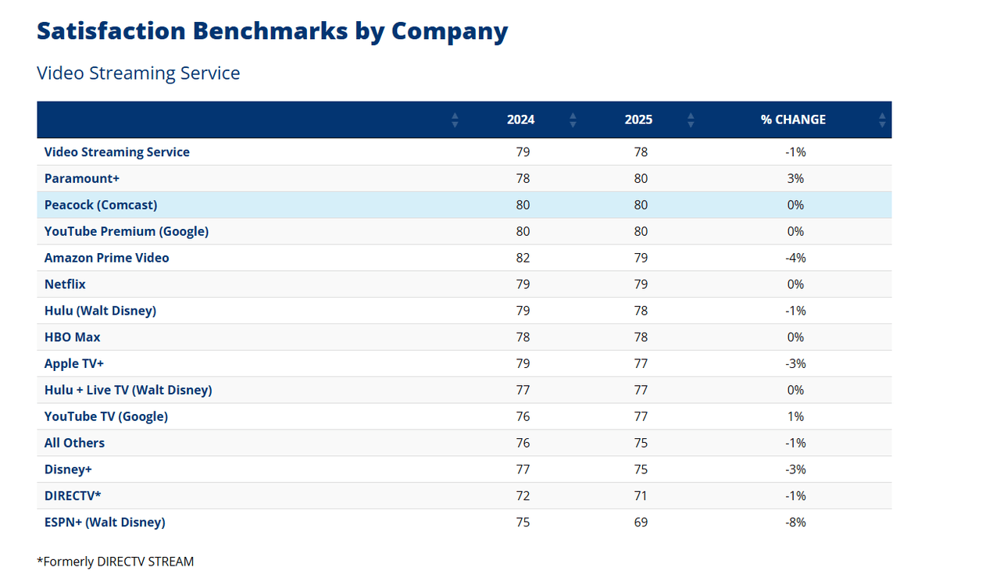

Peacock TV 评测：最实惠、最值得尝试的流媒体服务

Peacock 的主要优势在于其庞大的内容库。付费套餐提供超过 8 万小时的内容，涵盖 NBC/Bravo 剧集、环球影业和梦工厂电影、Peacock Originals 原创作品、体育赛事以及适合所有年龄段和兴趣的新闻。NBC 的热门剧集次日即可观看，环球影业的电影则在影院上映后 4 个月内 即可在平台上线。这在流媒体平台的更新速度中名列前茅。
Peacock 频道提供丰富的 NBC 经典剧集。《周六夜现场》全部 50 季均在此独家播出，次日即可观看新剧集。《办公室》、《公园与游憩》、《我为喜剧狂》和《法律与秩序：特殊受害者》等热门剧集均可点播。
Peacock Originals 带来精彩的全新内容。《The Paper》是一部《Office》系列的仿纪录片衍生剧，已于 2025 年 9 月 4 日发布全部 10 集，并已确认推出第二季。《Twisted Metal》 第二季已于 7 月开播，充满动作和黑色幽默元素。
NBC 的剧集也提供了新鲜的内容。《圣丹尼斯医疗》将于 11 月回归，带来充满"医疗办公室"氛围的剧集。真人秀节目《爱情岛》和《叛徒》依然人气高涨。凭借正在播出的《周六夜现场》以及《我为喜剧狂》和《黄石》等经典剧集，Peacock在原创、经典和综艺之间取得了良好的平衡。
环球影业和梦工厂大片
Peacock 的主要优势在于 NBC 环球庞大的内容库。母公司康卡斯特旗下拥有环球影业、梦工厂动画、焦点影业和照明娱乐，确保新片和经典影片都能在 Peacock 平台上观看。
最近的热门影片包括《坏家伙们》（及续集）、《穿靴子的猫：最后的愿望》、《小黄人大眼萌：格鲁的崛起》和《超级马里奥兄弟电影》，非常适合家庭和动画迷观看。
环球影业的经典影片，如《速度与激情 9》、《侏罗纪世界：统治》、《大白鲨》、《怪物史莱克》系列、《ET 外星人》和《赌城风云》等，均可点播。
最重要的是，新片上线速度很快：环球影业的电影通常在4个月内登陆Peacock影院，有些甚至只需45天。即将上映的电影，例如《侏罗纪世界：重生》、《驯龙高手》和《魔法坏女巫：永不放弃》，将在影院上映后优先在Peacock影院上映。这让家庭影院、动画爱好者和动作片爱好者都能满意。
Peacock 上的体育赛事直播
体育内容是 Peacock 的一大优势。该平台涵盖主流赛事和独家赛事，让体育迷告别有线电视。主要内容包括：
NFL ：独家"周日橄榄球之夜"以及 2025 年超级碗。英超联赛 ：每周 3-4 场比赛，并提供完整重播。WWE ：完整的库、按次付费和现场活动。奥运会 ：独家 2026 年米兰-科尔蒂纳冬奥会流媒体。其他赛事 ：NBA、WNBA、十大联盟、印地赛车、斯坦利杯总决赛，以及花样滑冰、滑雪和越野摩托车。本地报道 ：从 2025 年开始通过 NBC 区域网络转播 MLB 和 NBA 比赛。
Peacock 提供从主流体育赛事到小众体育赛事的独家转播和重播服务。体育迷无需有线电视，即可在一个平台上观看所有赛事。仅凭这一点，许多人就选择 Peacock 就对了。
Peacock 上的新闻报道

除了娱乐和体育之外，Peacock 还提供丰富的
新闻版块的主要优势在于，
Peacock 的内容组合非常全面。NBC 经典剧集、环球影业电影、原创作品、真人秀、体育赛事和新闻，应有尽有。对于希望一站式观看所有内容的用户，Peacock 几乎可以满足他们的需求。
Peacock 用户体验和性能
广告经验
在 Reddit 和其他论坛上，用户普遍喜欢 Peacock 的库和功能，但许多人认为它比其他服务显示的广告更多。Peacock 承诺 Select 和 Premium 版每小时广告时间不到 5 分钟，而 Premium Plus 版除了部分直播内容外几乎没有广告。
我自己在Premium版上测试时，21分钟的《公园与游憩》一集大约有2分45秒的广告，而《谍影重重》（近两小时）则有四个15到30秒的短插播。体育节目的播放体验实际上更流畅——广告时段大多是评论或花絮，所以并没有严重干扰观看体验。即使安装了广告拦截器，在出现警告后也能继续播放。
与 HBO Max、Hulu、Paramount+ 和 Discovery+ 相比，Peacock 的性价比处于中间水平。就价格而言，如果你不介意轻微广告，Premium 还算可以；但如果你想要更清晰、近乎无缝的体验，Premium Plus 更值得入手。
界面和用户体验
我在 Windows 10 上使用 Chrome 测试了 Peacock。界面简洁易用，顶部设有"浏览"、"电视节目"、"电影"、"儿童"、"新闻"和"体育"等标签页。主页横幅广告重点推荐原创作品和新片，例如《办公室》和《妙事多》。热门影片很容易找到，但由于推荐内容侧重于热门内容，因此搜索小众影片需要更多滚动操作。
真正让我印象深刻的是电影详情页面。它清晰地显示了IMDb和烂番茄评分、类型、时长、上映年份、家长评级以及主要演员阵容——一切都一目了然。它甚至会推荐类似的电影和片段，所以我经常会立刻排队观看下一部影片。像这样的小细节让这个平台感觉出奇地人性化。
Peacock 移动应用程序
我在安卓系统上试用了 Peacock，安装和登录都很流畅，底部标签导航也很好用。热门标签页主要都是短片，观看列表感觉有点隐藏。字幕只能在设置里调整，播放器里不行。
Premium Plus 允许在手机和平板电脑上离线下载，但下载量上限为 25 项。电脑和电视上无法下载。与 Netflix 和 Prime Video 相比，它的下载量显然更有限。
跨平台兼容性
Peacock 跨设备运行流畅，可在智能电视、手机、平板电脑和电脑之间流畅同步。你可以在任何地方开始观看，并在其他地方无缝衔接。
支持的设备包括三星/LG 智能电视、Roku、Apple TV、Fire TV、Google/Android TV、PlayStation/Xbox 游戏机、Windows/macOS 浏览器以及 iOS/Android 移动设备。
不过，离线下载仅限
VPN 使用存在问题。测试 ExpressVPN 的美国服务器时触发了"检测到 VPN"警告，导致流媒体播放不稳定。为了获得可靠的长期访问，通过 环球巴士 共享账户比不可靠的 VPN 方法更实用。
播放质量和稳定性
Peacock 的播放效果总体稳定。部分设备支持
网页播放器拥有全面的控制功能：播放/音量工具、10 秒跳过按钮、字幕切换、剧集选择器和节目描述。移动应用新增了"继续观看"和"观看列表"功能。不过，调整字幕需要前往设置界面，而不是播放器内置的控制按钮。
使用家庭 Wi-Fi 时，剧集切换几乎即时，导航流畅。移动数据性能也相当稳定。网络不稳定时偶尔会出现轻微加载，但缓冲总体来说仍然稳定。虽然 Peacock 的优化程度不如 Netflix 等成熟平台，但足以满足日常使用。
Peacock家长控制
Peacock 的家长控制功能使用四位数 PIN 码来限制成人内容，最多支持六个账户。但是，你无法为每个账户设置单独的分级限制，只能设置通用限制。与 Disney+、Max 和 Netflix 相比，这使其对于不同年龄段孩子的家庭来说灵活性较低。
在测试过程中，我们还研究了专业数据和用户反馈。根据ACSI 报告，2025 年美国流媒体满意度平均为 78%。Peacock 在 2024 年和 2025 年均保持了 80% 的满意度，高于行业平均水平，展现出持续的可靠性。
总体而言，Peacock 的用户体验非常出色：满意度高于行业平均水平，界面直观，跨平台兼容性良好，播放质量也足够稳定。广告仍然是其最大的弱点，但在同类入门级方案中，Peacock 仍处于中等水平。进一步优化广告体验将显著增强其整体竞争力。
概括
2025 年，Peacock继续展现出稳健的整体表现。NBC 经典剧集、Peacock原创、环球影业和梦工厂电影以及体育赛事和新闻报道保持了其库库优势和独特性。
体验方面，Peacock 的满意度连续两年保持在 80%，高于行业平均水平。界面直观，跨平台兼容性强，播放质量保持相对稳定。虽然广告仍然是用户关注的重点，但其节奏总体可控，远优于 Netflix、Disney+ 等平台。在体育赛事期间，广告时段通常会被补充节目取代，观看体验尚可。
如果你可以忍受适度的广告，Peacock 的内容和功能仍然物有所值。如果你想要更经济实惠的体验，可以通过